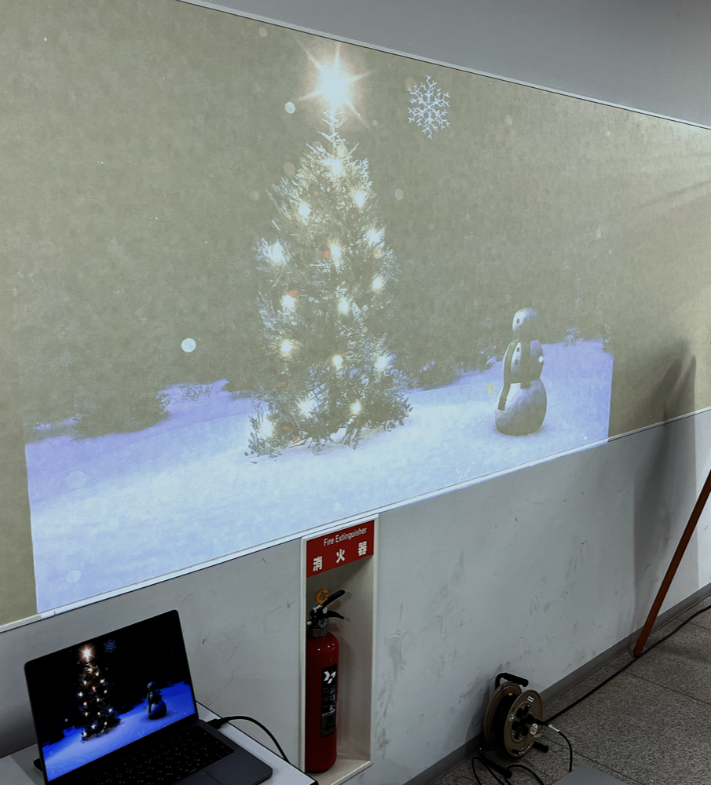
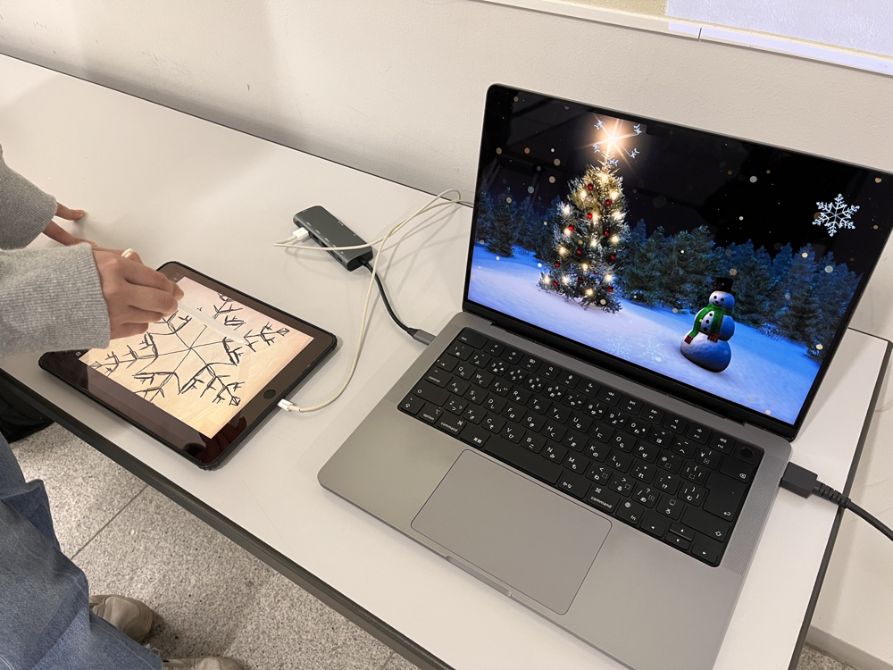

SnowFlake

Open on YouTubeTechnology
- Processing
- iPad
- Projector
SnowFlake is an interactive installation in which participants draw snow crystals on an iPad, and those crystals are added to a projected landscape where snow begins to fall.
As each drawn crystal falls, it gradually melts. Once it has fully melted, a snow crystal with the same shape falls again from above.
Natural snow crystals have highly diverse and beautiful forms. Similarly, the crystals drawn by participants each have unique shapes and patterns that cannot be exactly the same as anyone else's.
The work was created to give participants and viewers an approachable encounter with information technology, expressing individual creativity in a familiar and accessible form.
SnowFlake was exhibited at Meisei University Open Campus.
